Six jobs that show what JavaScript functions in SQLite can do for an app developer, and how they get you to Done! faster.
Don Yarmy Engineering is made up for this demo. Its app team builds apps on phones, with Code on the Go, for the firm's clients. The clients have no names. The cities and airports in the flight-routes job are real places. The trial data is made up.
With sqlite-js, you write a small function in JavaScript, give it a name, and call it from
SQL like any built-in function. It works in the sqlite3 command in Code on the Go's
Terminal, and in the SQLite database of an app you build with Code on the Go. A narrated video of
the same demo goes with this page.
To get to Done! faster, in three ways:
lower(), sinh(), avg() and median().
JavaScript adds Unicode, regular expressions, JSON, loops that run until an answer is good
enough, and anything else you can write.Everything runs on the phone. It needs no server, and after installing, no Internet.
Install the sqlite package, which is the sqlite3 command, and
sqlite-js. This needs an Internet connection.
apt update
apt install sqlite sqlite-jsThen open a database, load sqlite-js, and make a function. A scalar function returns one value for each row. It gets its SQL arguments in an array.
sqlite3 demo.db
.load sqlite-js
SELECT js_create_scalar('slugify', '(function (args) {
return args[0].toLowerCase().replace(/[^a-z0-9]+/g, "-").replace(/^-|-$/g, "");
})');
SELECT slugify('Hello, World!');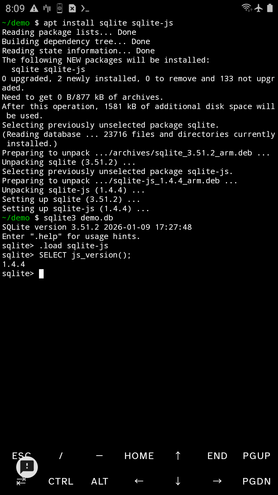
There are four kinds of function: a scalar (js_create_scalar),
an aggregate that turns many rows into one value
(js_create_aggregate), a window function, and a
collation that decides how text sorts. A function lasts for the session. To keep
functions in the database, call SELECT js_init_table(); before creating them: they
are stored in a table named js_functions, and a later session gets them back with
SELECT js_init_table(1);.
Create a project from the JavaScript in SQLite template. It has sqlite-js,
an SQLite that can load it (requery's sqlite-android), Room, and a sample app that
already works. Job 6 is built from it.
Code on the Go's Help has the details: JavaScript in SQLite (sqlite-js) for Terminal, with the reference of every function, and JavaScript in SQLite for apps.
| Job | The client's problem | Where | What JavaScript adds |
|---|---|---|---|
| 1. Duplicate customers | The same person, typed in by hand three ways. | Terminal | Removes accents, turns "Last, First" around, and scores how alike two names are (edit distance). Two scalar functions. |
| 2. Packing lists | Each van's packing list is JSON, and has rules. | Terminal | A trigger calls a function that reads the list and refuses a bad one, with a message that says what's wrong. |
| 3. Chain for a footbridge | How much chain to buy. | Terminal | Solves the hanging chain's curve with Newton's method: a loop until the answer stops changing. |
| 4. A drug trial | Does the drug work, or was it chance? | Terminal | Welch's t-test as an aggregate, and a permutation test that shuffles the groups 10,000 times. |
| 5. Flight routes | Fuel estimates for an airline's routes. | Terminal | Great-circle and constant-heading distances, and points along the route for a map. |
| 6. Delivery fees | A grocery client changes its fee every few weeks. | App | The fee rule is JavaScript stored in the app's database, changed without rebuilding the app. |
Each job is one script, in this page's terminal folder. Copy that folder to the
phone, for example into Download, then in Terminal:
mkdir -p ~/demo
cp /sdcard/Download/terminal/*.sql ~/demo/
cd ~/demo
sqlite3 demo.db < duplicates.sqlEach script starts with .load sqlite-js, creates its functions and table, and
prints its results. Job 2 keeps its function in its own database file, packing.db;
the others use demo.db. The output shown under each script is from a real run on
the phone.
A client's customer list was typed in by hand, so one person appears as "José Núñez", as
"Nunez, Jose", and in capitals. SQLite's lower() changes only A to Z, and SQLite has
no way to remove accents or to say how alike two names are.
Script: terminal/duplicates.sql
-- Don Yarmy Engineering: find customers who were typed in twice.
--
-- A client's customer list was typed in by hand, so one person can appear
-- as "José Núñez", "Nunez, Jose" and "JOSE NUNEZ". SQLite's lower() changes
-- only A to Z, and SQLite has no way to remove accents or to say how alike
-- two names are. Two JavaScript functions do both.
--
-- Run it in Terminal: sqlite3 demo.db < duplicates.sql
-- To use your own list, replace the INSERT with your names.
.load sqlite-js
.headers on
-- Creating a function prints 0. Hide that.
.output /dev/null
-- name_key('Núñez, José ') returns 'jose nunez': no accents, no
-- apostrophes, lower case, "Last, First" turned around, and the words
-- sorted, so their order doesn't matter. Letters of every alphabet are kept,
-- with the vowel signs of scripts such as Hindi's, so names in those scripts
-- don't all become the same key.
SELECT js_create_scalar('name_key', '(function (args) {
// NFKD splits an accented letter into the letter and its accent, and turns
// ligatures and full-width letters into plain ones. Only the accents of
// Latin, Greek and Cyrillic letters (U+0300 to U+036F) are removed.
let s = (args[0] ?? "").toString().normalize("NFKD").replace(/[\u0300-\u036f]/g, "");
// Letters with no accent to remove, written the way they are usually typed.
const plain = { "ø": "o", "ł": "l", "ß": "ss", "æ": "ae", "œ": "oe", "đ": "d" };
s = s.toLowerCase().replace(/[øłßæœđ]/g, (c) => plain[c]);
s = s.replace(/[''\u2019]/g, "");
const comma = s.indexOf(",");
if (comma >= 0) s = s.slice(comma + 1) + " " + s.slice(0, comma);
return s.replace(/[^\p{L}\p{M}\p{N}]+/gu, " ").trim().split(" ").sort().join(" ");
})');
-- similarity(a, b) is 1 for the same text and less for each letter that
-- must be added, removed or changed to turn one into the other (the edit
-- distance), down to 0.
SELECT js_create_scalar('similarity', '(function (args) {
const [a, b] = args.map((s) => Array.from(s)); // letters, not UTF-16 units
const row = Array.from({ length: b.length + 1 }, (_, j) => j);
for (let i = 1; i <= a.length; i++) {
let diagonal = row[0];
row[0] = i;
for (let j = 1; j <= b.length; j++) {
const above = row[j];
const change = a[i - 1] === b[j - 1] ? 0 : 1;
row[j] = Math.min(above + 1, row[j - 1] + 1, diagonal + change);
diagonal = above;
}
}
return 1 - row[b.length] / Math.max(a.length, b.length, 1);
})');
.output stdout
DROP TABLE IF EXISTS customers;
CREATE TABLE customers (id INTEGER PRIMARY KEY, name TEXT);
INSERT INTO customers (name) VALUES
('José Núñez'), ('Nunez, Jose'), ('JOSE NUNEZ '),
('Ann Lee'), ('Anne Lee'), ('Lee, Ann'),
('Grace O''Brien'), ('Grace OBrien'),
('Bob Stone'), ('Robert Stone');
-- Each name and its key.
SELECT id, name, name_key(name) AS key FROM customers;
-- Pairs whose keys are at least 85% alike: probably the same person.
WITH k AS (SELECT id, name_key(name) AS key FROM customers)
SELECT a.id AS id, b.id AS same_as,
round(similarity(a.key, b.key), 2) AS score
FROM k AS a JOIN k AS b ON a.id < b.id
WHERE a.key <> '' AND similarity(a.key, b.key) >= 0.85
ORDER BY a.id, b.id;
Output:
id|name|key
1|José Núñez|jose nunez
2|Nunez, Jose|jose nunez
3|JOSE NUNEZ |jose nunez
4|Ann Lee|ann lee
5|Anne Lee|anne lee
6|Lee, Ann|ann lee
7|Grace O'Brien|grace obrien
8|Grace OBrien|grace obrien
9|Bob Stone|bob stone
10|Robert Stone|robert stone
id|same_as|score
1|2|1.0
1|3|1.0
2|3|1.0
4|5|0.88
4|6|1.0
5|6|0.88
7|8|1.0
Seven pairs come out as likely duplicates. Bob Stone and Robert Stone don't: a nickname needs a list of nicknames, not a formula.
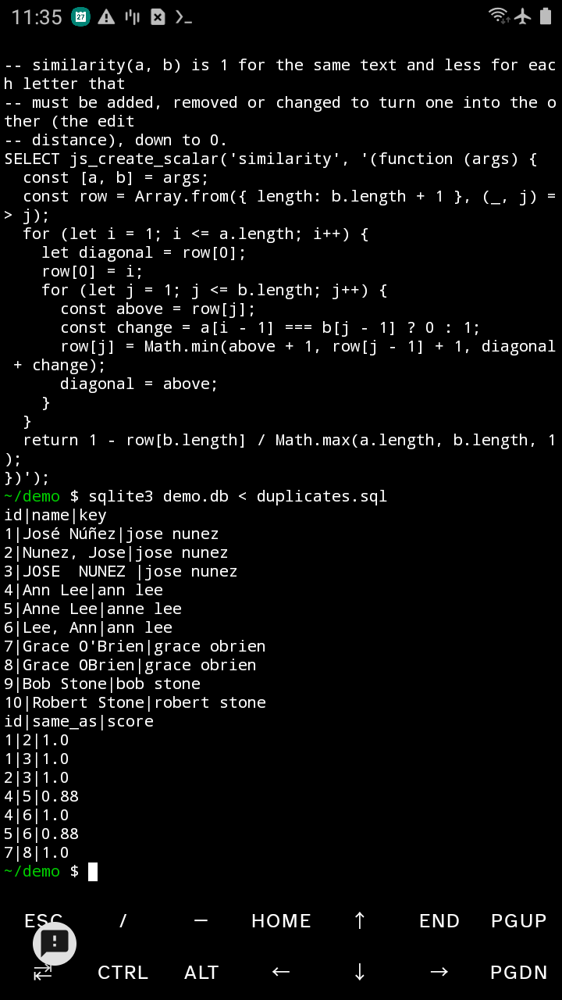
A warehouse client stores each van's packing list as JSON. Every item needs a code like BOLT-M12-050, a whole number of 1 or more, and a weight, and the load must stay under the van's limit. A CHECK constraint can't read a list like that. A trigger that calls a JavaScript function can.
Script: terminal/packing-lists.sql,
run with sqlite3 packing.db < packing-lists.sql
-- Don Yarmy Engineering: refuse a packing list that breaks the rules.
--
-- A warehouse client stores each van's packing list as JSON. Every item
-- needs a code like BOLT-M12-050, a whole number of 1 or more, and a weight,
-- and the load must stay under the van's limit. A CHECK constraint can't
-- read a JSON list like that. A trigger that calls a JavaScript function
-- can, and its error message says exactly what is wrong.
--
-- Run it in Terminal: sqlite3 packing.db < packing-lists.sql
-- It uses its own database file, because it keeps its function in the
-- database (js_init_table), and the other scripts' functions would be kept
-- there too.
.load sqlite-js
-- The sqlite3 command turns trusted_schema off, so that the triggers and
-- views of a database you got from someone else can't call functions like
-- the one below (plain SQL in them still runs). This database is your own,
-- so allow it.
-- Every later session that writes to the shipments table needs this line,
-- .load sqlite-js and SELECT js_init_table(1); see the end of this file.
PRAGMA trusted_schema = ON;
.output /dev/null
-- Keep the functions in the database's js_functions table, so a later
-- session gets them back with SELECT js_init_table(1).
SELECT js_init_table();
-- check_packing_list(items, limit_kg) returns 1 for a good list. For a bad
-- one it throws an error, which stops the INSERT or UPDATE.
SELECT js_create_scalar('check_packing_list', '(function (args) {
const [json, limitKg] = args;
if (typeof limitKg !== "number" || !(limitKg > 0)) {
throw new Error("The van''s limit must be a number of kg, more than 0.");
}
let items;
try {
items = JSON.parse(json);
} catch (e) {
throw new Error("The packing list is not valid JSON.");
}
if (!Array.isArray(items) || items.length === 0) {
throw new Error("The packing list has no items.");
}
let total = 0;
items.forEach((item, n) => {
const where = `Item ${n + 1}`;
if (item === null || typeof item !== "object" || Array.isArray(item)) {
throw new Error(`${where} is not an item with a code, a quantity and a weight.`);
}
const code = item.code;
if (typeof code !== "string") {
throw new Error(`${where}: the code must be text, like "BOLT-M12-050".`);
}
if (!/^[A-Z]{3,5}-[A-Z0-9]{2,4}-[0-9]{3}$/.test(code)) {
throw new Error(`${where}: "${code}" is not a code like BOLT-M12-050.`);
}
if (!Number.isInteger(item.qty) || item.qty < 1) {
throw new Error(`${where}: ${item.qty} is not a whole number of 1 or more.`);
}
if (typeof item.kg !== "number" || !(item.kg > 0)) {
throw new Error(`${where}: the weight must be a number of kg, more than 0.`);
}
total += item.qty * item.kg;
});
if (total > limitKg * (1 + 1e-9)) { // a little slack for rounding
throw new Error(`The load is ${total.toFixed(1)} kg, over the limit of ${limitKg} kg.`);
}
return 1;
})');
.output stdout
DROP TABLE IF EXISTS shipments;
CREATE TABLE shipments (
id INTEGER PRIMARY KEY,
van TEXT NOT NULL,
limit_kg REAL NOT NULL,
items TEXT NOT NULL
);
CREATE TRIGGER shipments_check_insert BEFORE INSERT ON shipments
BEGIN
SELECT check_packing_list(NEW.items, NEW.limit_kg);
END;
CREATE TRIGGER shipments_check_update
BEFORE UPDATE OF items, limit_kg ON shipments
BEGIN
SELECT check_packing_list(NEW.items, NEW.limit_kg);
END;
-- A good list: 200 bolts and 4 brackets, 13.0 kg.
INSERT INTO shipments (van, limit_kg, items) VALUES ('Van 1', 900,
'[{"code": "BOLT-M12-050", "qty": 200, "kg": 0.045},
{"code": "BRKT-L90-200", "qty": 4, "kg": 1.0}]');
-- A code in the wrong form.
INSERT INTO shipments (van, limit_kg, items) VALUES ('Van 2', 900,
'[{"code": "bolt m12", "qty": 10, "kg": 0.045}]');
-- Half a bracket.
INSERT INTO shipments (van, limit_kg, items) VALUES ('Van 2', 900,
'[{"code": "BOLT-M12-050", "qty": 10, "kg": 0.045},
{"code": "BRKT-L90-200", "qty": 1.5, "kg": 1.0}]');
-- 40 steel beams for a small van.
INSERT INTO shipments (van, limit_kg, items) VALUES ('Van 3', 900,
'[{"code": "BEAM-I20-600", "qty": 40, "kg": 26.5}]');
-- Changing a stored list is checked too.
UPDATE shipments SET items = '[]' WHERE van = 'Van 1';
-- Only the good list was stored.
SELECT id, van, json_array_length(items) AS items FROM shipments;
-- In a later session, load the stored function before writing:
-- .load sqlite-js
-- PRAGMA trusted_schema = ON;
-- SELECT js_init_table(1);
-- js_init_table(1) runs the code stored in the database, so use it only on
-- databases you trust, like this one. Without those lines, every INSERT
-- into shipments, and every change to a list, fails with
-- "no such function: check_packing_list". The trigger guards against
-- mistakes, not against someone set on getting round it: a program that
-- can write the file can still delete rows or drop the trigger.
Output: four lists refused, one stored.
Runtime error near line 100: Item 1: "bolt m12" is not a code like BOLT-M12-050.
Runtime error near line 104: Item 2: 1.5 is not a whole number of 1 or more.
Runtime error near line 109: The load is 1060.0 kg, over the limit of 900 kg.
Runtime error near line 113: The packing list has no items.
1|Van 1|2
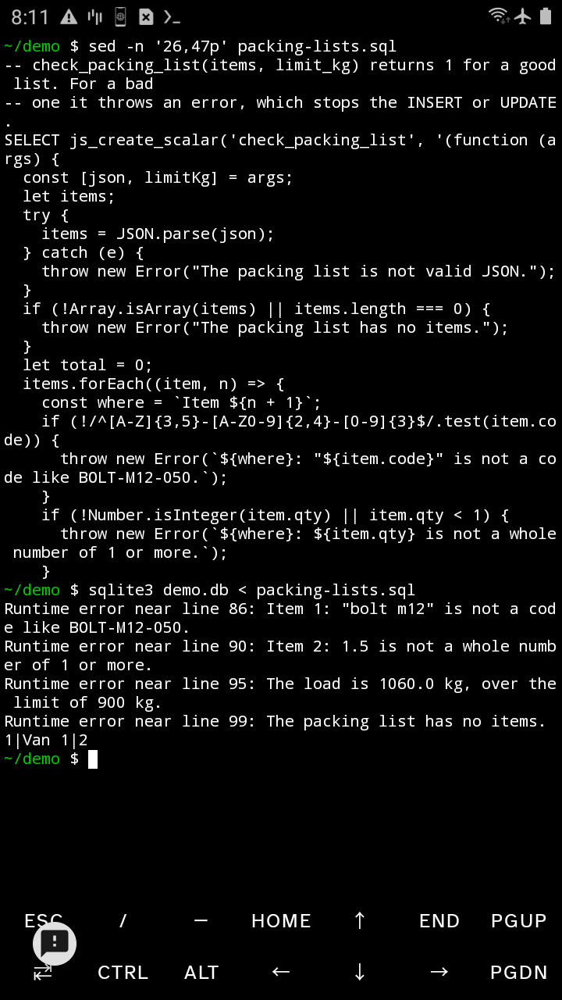
The trigger is stored in the database, so it runs for every program that adds or changes a
list in shipments. These are three later sessions on the same database, run on the
phone:
| Session | Result |
|---|---|
Plain sqlite3, no sqlite-js |
Error: in prepare, no such function: check_packing_list: no list can be
added. |
.load sqlite-js and SELECT js_init_table(1);, without
PRAGMA trusted_schema = ON |
unsafe use of check_packing_list(): still no list can be added. |
| All three lines | The function is back and checks the list:
The packing list has no items. |
The sqlite3 command turns trusted_schema off when it
opens a database, so that the triggers and views of a database you got from someone else can't
call functions like these. It is not a general safety switch: plain SQL in those triggers still
runs. And js_init_table(1) runs the code stored in the database's
js_functions table. Do both only for databases you made yourself. In an app, the
database is the app's own, and it opens it with
SqliteJs.ENTRY_POINT_FOR_TRUSTED_DATABASE; see
Before you write your own.
The trigger guards against mistakes, not against someone set on getting round it: a program that can write the database file can still delete rows, or drop the trigger and then write anything.
A client is building a footbridge whose deck hangs from two chains. A hanging chain forms a
curve called a catenary, and the length of chain depends on a number that no formula gives
directly. The function finds it the way an engineer would: guess, correct the guess, and repeat
until it stops changing. SQLite has cosh() and sinh(), but in SQL that
loop takes a recursive query that is hard to read.
Script: terminal/chain.sql
-- Don Yarmy Engineering: how much chain to buy for a footbridge.
--
-- A client is building a footbridge whose deck hangs from two chains. A
-- chain hangs in a curve called a catenary, y = a * cosh(x / a). The chain's
-- length is 2 * a * sinh(span / (2 * a)), but first a has to be found from
-- the span and the sag, the drop at the middle:
-- sag = a * (cosh(span / (2 * a)) - 1)
-- That equation has no formula for a, so the function below solves it with
-- Newton's method: guess, correct the guess, and repeat until it stops
-- changing. SQLite has cosh() and sinh(), but in SQL that loop takes a
-- recursive query that is hard to read. In JavaScript it's a plain loop.
--
-- Run it in Terminal: sqlite3 demo.db < chain.sql
-- To price your own bridge, change the rows in the INSERT and the price.
.load sqlite-js
.headers on
.mode column
.output /dev/null
-- chain_length(span, sag): the length of chain, in the units of its
-- arguments, that hangs across span and drops sag at the middle.
SELECT js_create_scalar('chain_length', '(function (args) {
const [span, sag] = args;
if (!(span > 0 && sag > 0)) throw new Error("span and sag must be more than 0");
const half = span / 2;
// A parabola is close to a catenary, so its a is a good first guess.
let a = span * span / (8 * sag);
for (let i = 0; i < 1000; i++) {
const x = half / a;
// cosh(x) - 1, written so that it stays exact when x is small
const coshm1 = 2 * Math.sinh(x / 2) ** 2;
const error = a * coshm1 - sag;
const slope = coshm1 - x * Math.sinh(x);
const next = a - error / slope;
if (!Number.isFinite(next)) break;
if (Math.abs(next - a) < 1e-12 * a) {
const length = 2 * next * Math.sinh(half / next);
// A chain is never longer than down to the sag and back up.
if (length < span + 2 * sag) return length;
break;
}
a = next;
}
throw new Error("no answer found for this span and sag");
})');
.output stdout
DROP TABLE IF EXISTS bridge_options;
CREATE TABLE bridge_options (span_m REAL, sag_m REAL);
-- One 40 m span, three possible sags. More sag needs more chain but pulls
-- less on the anchors.
INSERT INTO bridge_options VALUES (40, 2), (40, 3), (40, 4);
-- Two chains, 5% spare for the fittings, sold in whole metres at 38.50 a
-- metre.
SELECT sag_m,
round(chain_length(span_m, sag_m), 3) AS one_chain_m,
CAST(ceil(2 * chain_length(span_m, sag_m) * 1.05) AS INTEGER) AS buy_m,
printf('%.2f', ceil(2 * chain_length(span_m, sag_m) * 1.05) * 38.50)
AS cost
FROM bridge_options;
Output:
sag_m one_chain_m buy_m cost
----- ----------- ----- -------
2.0 40.265 85 3272.50
3.0 40.594 86 3311.00
4.0 41.047 87 3349.50
For a 40 metre span with 3 metres of sag, each chain is 40.59 metres long. With two chains and 5% spare, buy 86 metres. A separate calculation, by bisection instead of Newton's method, gives the same lengths.
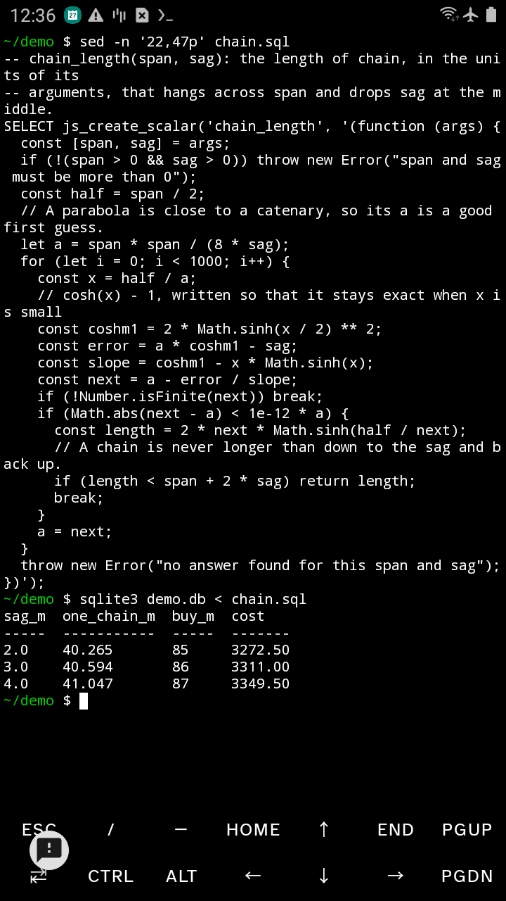
A clinical-research client gave 20 patients a new blood-pressure drug and 20 a placebo, and measured how far each patient's pressure fell. The numbers are made up. The drug group's fell 5.85 mmHg more on average. Could chance alone do that? SQLite can average each group, and has no test for that question.
Script: terminal/drug-trial.sql
-- Don Yarmy Engineering: does the drug work, or was it chance?
--
-- A clinical-research client gave 20 patients a new blood-pressure drug and
-- 20 a placebo, and measured how far each patient's systolic pressure fell
-- after 8 weeks, in mmHg. (The numbers are made up.) The drug group fell
-- further on average, but small groups vary a lot, so the question is
-- whether a difference this large could easily happen by chance.
--
-- SQLite can average each group, and has no test for that question. Three
-- JavaScript functions answer it two ways:
-- - welch_test, an aggregate, computes Welch's t-test: how many standard
-- errors apart the two averages are (t), and the test's degrees of
-- freedom (df).
-- - t_p_value turns t and df into a p-value: the chance of a difference at
-- least this large if the drug did nothing.
-- - permutation_p checks the same thing by brute force. It shuffles the
-- drug and placebo labels 10,000 times and counts how often the shuffled
-- groups differ as much as the real ones. A fixed seed makes the shuffles
-- the same on every run.
--
-- Run it in Terminal: sqlite3 demo.db < drug-trial.sql
-- To test your own groups, replace the INSERT. The group names must be
-- 'drug' and 'placebo'.
.load sqlite-js
.headers on
.mode column
.output /dev/null
-- welch_test(group, value) returns JSON: {"difference", "t", "df"}.
SELECT js_create_aggregate('welch_test',
'const groups = { drug: [], placebo: [] };',
'(function (args) {
const [group, value] = args;
if (!(group in groups)) throw new Error(`unknown group ${group}`);
groups[group].push(value);
})',
'(function () {
const describe = (xs) => {
const n = xs.length;
const mean = xs.reduce((sum, x) => sum + x, 0) / n;
const variance = xs.reduce((sum, x) => sum + (x - mean) ** 2, 0) / (n - 1);
return { n, mean, se2: variance / n };
};
if (groups.drug.length < 2 || groups.placebo.length < 2) {
throw new Error("each group needs at least 2 patients");
}
const d = describe(groups.drug);
const p = describe(groups.placebo);
const se2 = d.se2 + p.se2;
return JSON.stringify({
difference: d.mean - p.mean,
t: (d.mean - p.mean) / Math.sqrt(se2),
df: se2 ** 2 / (d.se2 ** 2 / (d.n - 1) + p.se2 ** 2 / (p.n - 1)),
});
})');
-- t_p_value(t, df): the two-sided p-value of Student's t distribution,
-- from the regularized incomplete beta function, as in Numerical Recipes.
SELECT js_create_scalar('t_p_value', '(function (args) {
const [t, df] = args;
const logGamma = (z) => {
const c = [76.18009172947146, -86.50532032941677, 24.01409824083091,
-1.231739572450155, 0.1208650973866179e-2, -0.5395239384953e-5];
let y = z;
let series = 1.000000000190015;
for (const k of c) series += k / ++y;
const tmp = z + 5.5 - (z + 0.5) * Math.log(z + 5.5);
return -tmp + Math.log(2.5066282746310005 * series / z);
};
const fraction = (a, b, x) => {
const tiny = 1e-300;
const fix = (v) => (Math.abs(v) < tiny ? tiny : v);
let c = 1;
let d = 1 / fix(1 - (a + b) * x / (a + 1));
let h = d;
for (let m = 1; m <= 300; m++) {
const m2 = 2 * m;
let aa = m * (b - m) * x / ((a + m2 - 1) * (a + m2));
d = 1 / fix(1 + aa * d);
c = fix(1 + aa / c);
h *= d * c;
aa = -(a + m) * (a + b + m) * x / ((a + m2) * (a + m2 + 1));
d = 1 / fix(1 + aa * d);
c = fix(1 + aa / c);
h *= d * c;
if (Math.abs(d * c - 1) < 1e-15) break;
}
return h;
};
const a = df / 2;
const b = 0.5;
const x = df / (df + t * t);
if (x >= 1) return 1;
const front = Math.exp(logGamma(a + b) - logGamma(a) - logGamma(b)
+ a * Math.log(x) + b * Math.log(1 - x));
return x < (a + 1) / (a + b + 2)
? front * fraction(a, b, x) / a
: 1 - front * fraction(b, a, 1 - x) / b;
})');
-- permutation_p(group, value, shuffles, seed): the share of shuffles whose
-- difference is at least as large as the real one.
SELECT js_create_aggregate('permutation_p',
'const values = []; const isDrug = []; let shuffles = 0; let seed = 0;',
'(function (args) {
isDrug.push(args[0] === "drug");
values.push(args[1]);
shuffles = args[2];
seed = args[3];
})',
'(function () {
// mulberry32: a small random number generator that repeats its
// numbers for the same seed, which Math.random() does not.
let s = seed >>> 0;
const random = () => {
s = (s + 0x6d2b79f5) >>> 0;
let r = Math.imul(s ^ (s >>> 15), 1 | s);
r = (r + Math.imul(r ^ (r >>> 7), 61 | r)) ^ r;
return ((r ^ (r >>> 14)) >>> 0) / 4294967296;
};
const difference = (labels) => {
let drug = 0, nDrug = 0, placebo = 0, nPlacebo = 0;
labels.forEach((d, i) => {
if (d) { drug += values[i]; nDrug++; } else { placebo += values[i]; nPlacebo++; }
});
return drug / nDrug - placebo / nPlacebo;
};
if (!isDrug.includes(true) || !isDrug.includes(false)) {
throw new Error("both groups need patients");
}
const observed = Math.abs(difference(isDrug));
const labels = isDrug.slice();
let asLarge = 0;
for (let k = 0; k < shuffles; k++) {
for (let i = labels.length - 1; i > 0; i--) {
const j = Math.floor(random() * (i + 1));
[labels[i], labels[j]] = [labels[j], labels[i]];
}
if (Math.abs(difference(labels)) >= observed - 1e-9) asLarge++;
}
return (asLarge + 1) / (shuffles + 1);
})');
.output stdout
DROP TABLE IF EXISTS trial;
CREATE TABLE trial (
patient INTEGER PRIMARY KEY,
grp TEXT NOT NULL CHECK (grp IN ('drug', 'placebo')),
drop_mmhg REAL NOT NULL
);
INSERT INTO trial (grp, drop_mmhg) VALUES
('drug', 5.5), ('drug', 14.8), ('drug', 13.7), ('drug', 17.4),
('drug', 0.0), ('drug', 5.4), ('drug', 11.8), ('drug', 16.0),
('drug', 10.7), ('drug', 28.3), ('drug', 14.7), ('drug', 0.3),
('drug', 6.4), ('drug', 10.9), ('drug', 0.4), ('drug', 19.2),
('drug', 2.6), ('drug', 5.2), ('drug', -1.0), ('drug', 9.9),
('placebo', 1.5), ('placebo', 9.5), ('placebo', 7.6), ('placebo', 15.8),
('placebo', 7.8), ('placebo', -14.7), ('placebo', 6.0), ('placebo', -1.8),
('placebo', 17.3), ('placebo', 9.6), ('placebo', -2.1), ('placebo', -10.9),
('placebo', -3.8), ('placebo', 8.8), ('placebo', 5.8), ('placebo', -0.3),
('placebo', 7.4), ('placebo', 6.3), ('placebo', -0.5), ('placebo', 5.8);
-- The two groups.
SELECT grp, count(*) AS patients, round(avg(drop_mmhg), 2) AS mean_drop
FROM trial GROUP BY grp;
-- Welch's t-test.
WITH test AS (SELECT welch_test(grp, drop_mmhg) AS r FROM trial)
SELECT round(json_extract(r, '$.difference'), 2) AS difference,
round(json_extract(r, '$.t'), 3) AS t,
round(json_extract(r, '$.df'), 1) AS df,
round(t_p_value(json_extract(r, '$.t'), json_extract(r, '$.df')), 4)
AS p
FROM test;
-- The same question by shuffling.
SELECT round(permutation_p(grp, drop_mmhg, 10000, 7329), 4) AS shuffled_p
FROM trial;
Output:
grp patients mean_drop
------- -------- ---------
drug 20 9.61
placebo 20 3.76
difference t df p
---------- ----- ---- ------
5.85 2.373 37.9 0.0228
shuffled_p
----------
0.0234
p is 0.023: if the drug did nothing, a difference this large, either way, would turn up by chance about 2 times in 100. Shuffling the labels 10,000 times agrees. SciPy's Welch t-test gives the same t, degrees of freedom and p for this data. On the phone used here, a Galaxy J7 from 2018, this script took 6.1 to 6.4 seconds in three runs, nearly all of it the 10,000 shuffles; each of the other scripts took less than 140 ms.
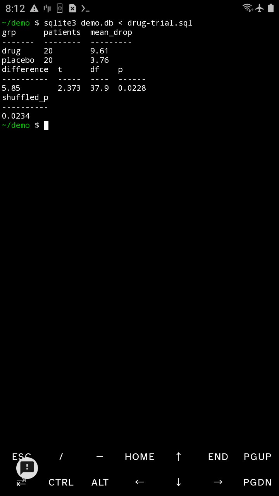
A charter airline client wants fuel estimates. The shortest way between two airports is the great circle, which looks curved on a flat map. One compass heading the whole way (a rhumb line) looks straight on the usual map, and is longer.
Script: terminal/routes.sql
-- Don Yarmy Engineering: how much fuel does the great circle save?
--
-- A charter airline client wants fuel estimates for its routes. The
-- shortest way between two airports is the great circle, which bends
-- toward the pole on a flat map. The line that looks straight on the usual
-- (Mercator) map is a rhumb line: one compass heading all the way, and a
-- longer trip. Three JavaScript functions compare them:
-- - gc_km: the great-circle distance (the haversine formula).
-- - rhumb_km: the distance along a constant heading.
-- - gc_point: a point part of the way along the great circle, for drawing
-- the route on a map.
-- Both distances treat the Earth as a sphere, which is within about 0.5% of
-- its real shape. SQLite has sin(), cos() and atan2(), so one formula could
-- be written in SQL. As named functions, they read like the formulas and
-- every query can reuse them.
--
-- Run it in Terminal: sqlite3 demo.db < routes.sql
-- To use your own routes, change the airports, the routes and the burn
-- rate. The fuel figures are estimates for comparison, not flight plans.
.load sqlite-js
.headers on
.mode column
.output /dev/null
SELECT js_create_scalar('gc_km', '(function (args) {
const [lat1, lon1, lat2, lon2] = args.map((d) => d * Math.PI / 180);
const h = Math.sin((lat2 - lat1) / 2) ** 2
+ Math.cos(lat1) * Math.cos(lat2) * Math.sin((lon2 - lon1) / 2) ** 2;
return 2 * 6371.0088 * Math.asin(Math.sqrt(h));
})');
SELECT js_create_scalar('rhumb_km', '(function (args) {
const [lat1, lon1, lat2, lon2] = args.map((d) => d * Math.PI / 180);
const dLat = lat2 - lat1;
// The short way around: across the date line when that is shorter.
let dLon = lon2 - lon1;
if (Math.abs(dLon) > Math.PI) dLon -= Math.sign(dLon) * 2 * Math.PI;
const stretch = Math.log(Math.tan(Math.PI / 4 + lat2 / 2)
/ Math.tan(Math.PI / 4 + lat1 / 2));
const q = Math.abs(stretch) > 1e-12 ? dLat / stretch : Math.cos(lat1);
return 6371.0088 * Math.sqrt(dLat * dLat + q * q * dLon * dLon);
})');
-- gc_point(lat1, lon1, lat2, lon2, f) returns 'lat, lon' at fraction f of
-- the way from the first point to the second.
SELECT js_create_scalar('gc_point', '(function (args) {
const f = args[4];
const [lat1, lon1, lat2, lon2] = args.slice(0, 4).map((d) => d * Math.PI / 180);
const toXyz = (lat, lon) =>
[Math.cos(lat) * Math.cos(lon), Math.cos(lat) * Math.sin(lon), Math.sin(lat)];
const p = toXyz(lat1, lon1);
const q = toXyz(lat2, lon2);
const angle = Math.acos(Math.min(1, p[0] * q[0] + p[1] * q[1] + p[2] * q[2]));
// The same place twice: no route to follow.
if (angle < 1e-12) return `${args[0].toFixed(1)}, ${args[1].toFixed(1)}`;
const a = Math.sin((1 - f) * angle) / Math.sin(angle);
const b = Math.sin(f * angle) / Math.sin(angle);
const [x, y, z] = [0, 1, 2].map((i) => a * p[i] + b * q[i]);
const lat = Math.atan2(z, Math.hypot(x, y)) * 180 / Math.PI;
const lon = Math.atan2(y, x) * 180 / Math.PI;
return `${lat.toFixed(1)}, ${lon.toFixed(1)}`;
})');
.output stdout
DROP TABLE IF EXISTS airports;
CREATE TABLE airports (code TEXT PRIMARY KEY, city TEXT, lat REAL, lon REAL);
-- Coordinates from OurAirports (ourairports.com), in degrees.
INSERT INTO airports VALUES
('SFO', 'San Francisco', 37.6198, -122.3748),
('JFK', 'New York', 40.6394, -73.7793),
('LHR', 'London', 51.4707, -0.4599),
('NRT', 'Tokyo', 35.7686, 140.3887),
('SYD', 'Sydney', -33.9461, 151.1770),
('GRU', 'São Paulo', -23.4313, -46.4700),
('JNB', 'Johannesburg', -26.1401, 28.2468);
DROP TABLE IF EXISTS routes;
CREATE TABLE routes (origin TEXT, destination TEXT);
INSERT INTO routes VALUES
('SFO', 'JFK'), ('JFK', 'LHR'), ('SFO', 'NRT'),
('LHR', 'NRT'), ('SYD', 'SFO'), ('GRU', 'JNB');
-- The client's jet burns about 1.8 kg of fuel per km (a made-up figure).
DROP VIEW IF EXISTS legs;
CREATE TEMP VIEW legs AS
SELECT r.origin || '-' || r.destination AS route,
gc_km(a.lat, a.lon, b.lat, b.lon) AS gc,
rhumb_km(a.lat, a.lon, b.lat, b.lon) AS rhumb
FROM routes AS r
JOIN airports AS a ON a.code = r.origin
JOIN airports AS b ON b.code = r.destination;
SELECT route,
CAST(round(gc) AS INTEGER) AS great_circle_km,
CAST(round(rhumb) AS INTEGER) AS rhumb_km,
CAST(round((rhumb - gc) * 1.8) AS INTEGER) AS fuel_saved_kg
FROM legs ORDER BY rhumb - gc DESC;
-- Where the great circle from San Francisco to Tokyo goes: north, toward
-- the Aleutian Islands, though both cities are near 36 degrees north.
WITH RECURSIVE steps(f) AS (SELECT 0.0 UNION ALL SELECT f + 0.25 FROM steps WHERE f < 1)
SELECT CAST(f * 100 AS INTEGER) || '%' AS part_of_trip,
gc_point(a.lat, a.lon, b.lat, b.lon, f) AS lat_lon
FROM steps, airports AS a, airports AS b
WHERE a.code = 'SFO' AND b.code = 'NRT';
Output:
route great_circle_km rhumb_km fuel_saved_kg
------- --------------- -------- -------------
LHR-NRT 9591 11372 3206
SFO-NRT 8227 8671 800
JFK-LHR 5540 5758 393
GRU-JNB 7439 7548 196
SFO-JFK 4152 4204 94
SYD-SFO 11950 11983 60
part_of_trip lat_lon
------------ ------------
0% 37.6, -122.4
25% 45.7, -144.8
50% 48.4, -171.8
75% 44.6, 161.8
100% 35.8, 140.4
London to Tokyo saves about 3,200 kg of fuel on the great circle. San Francisco to Tokyo swings north, toward the Aleutian Islands. The functions treat the Earth as a sphere: on these routes, GeographicLib's distances on the real shape of the Earth differ by at most 0.3%. A separate calculation on the same sphere gives the same distances. The fuel figures are estimates for comparing routes, not flight plans.
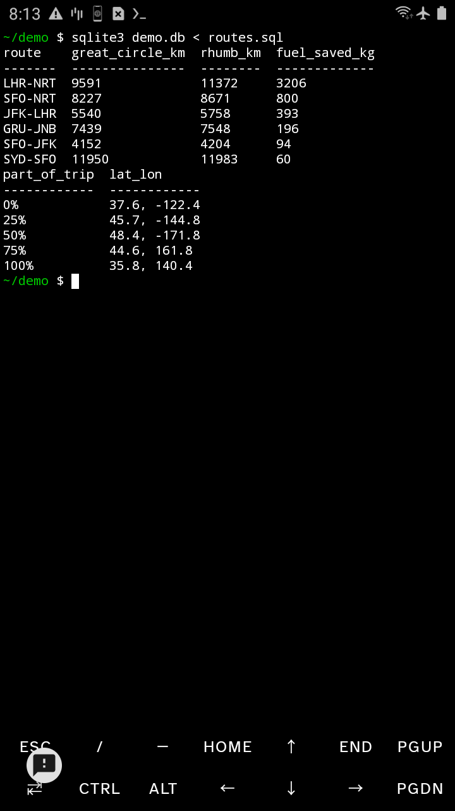
A grocery client changes its delivery fee every few weeks. In the Delivery Fees app, the fee
rule is JavaScript in a file, rules/delivery-fee.js, which the app stores in its
database and calls from its SQL query. To change the rule, edit the file in Code on the Go, save
it, and tap Reload rule in the app.
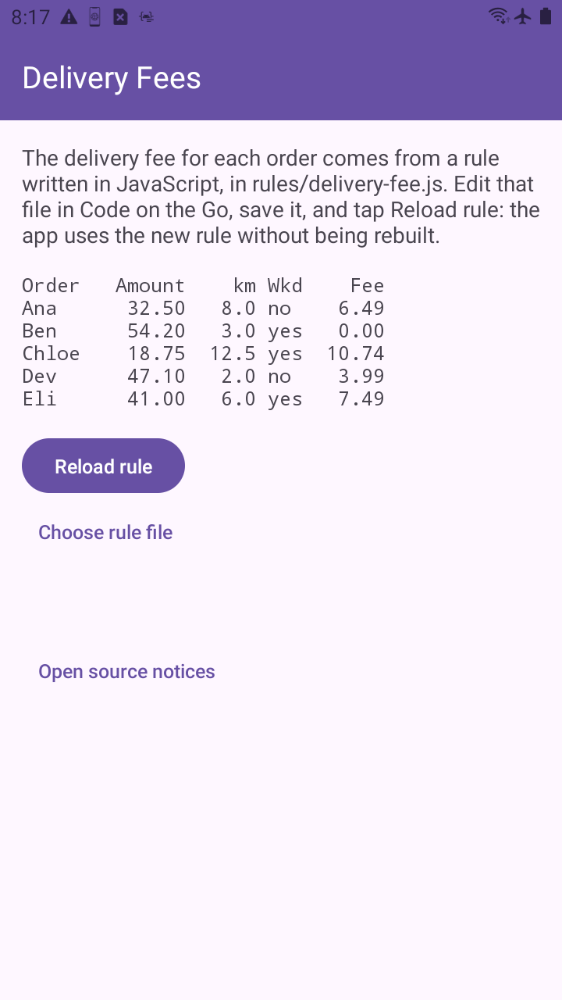
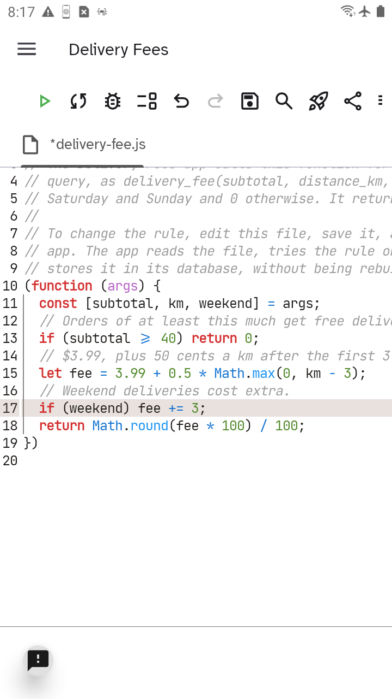
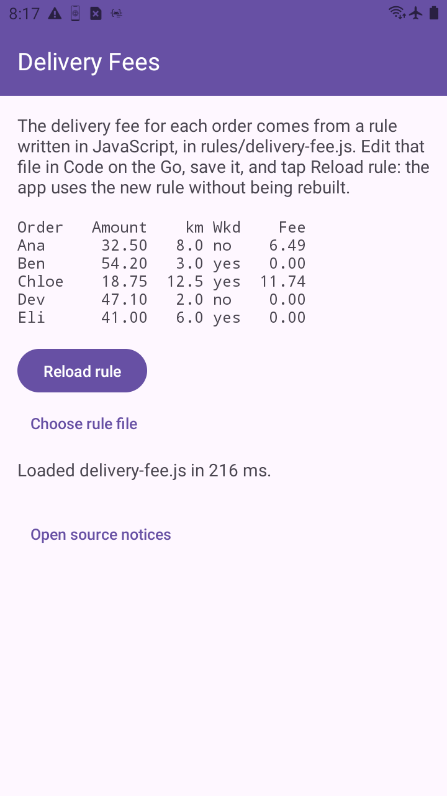
js_functions table, and opens the database again. A connection keeps the version
of a function it loaded when it opened, so the new rule needs new connections.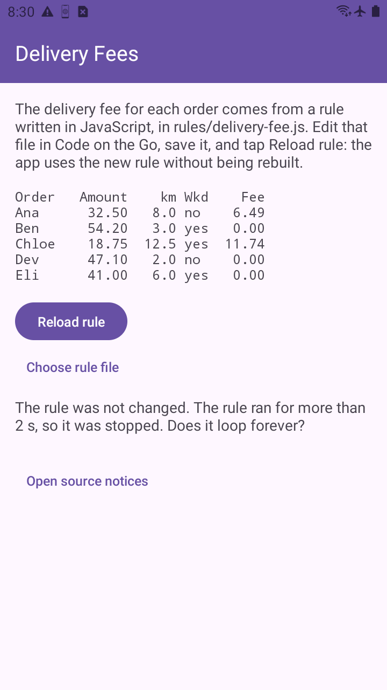
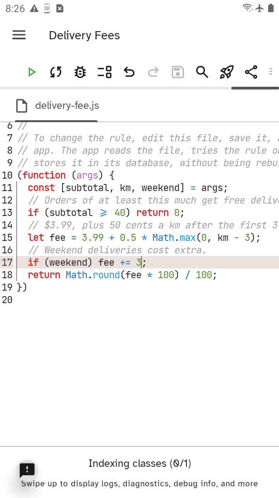
Delivery Fees, with the package name
com.donyarmyengineering.deliveryfees.ProductDatabase.kt. Replace MainActivity.kt,
activity_main.xml and strings.xml with the files below, and add
OrderDatabase.kt and rules/delivery-fee.js. The other files stay as
the template made them.rules/delivery-fee.js in the project's folder, in CodeOnTheGoProjects. On some
phones the picker shows internal storage only after you choose Show internal
storage in its menu. The app remembers the file.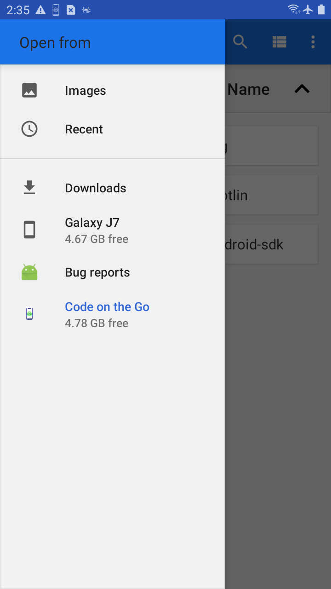
rules/delivery-fee.js, at the top of the project:
// Don Yarmy Engineering: the delivery fee for a grocery client's orders.
//
// The Delivery Fees app calls this function for each order, from its SQL
// query, as delivery_fee(subtotal, distance_km, weekend). weekend is 1 for
// Saturday and Sunday and 0 otherwise. It returns the fee in dollars.
//
// To change the rule, edit this file, save it, and tap Reload rule in the
// app. The app reads the file, tries the rule on its sample orders, and
// stores it in its database, without being rebuilt.
(function (args) {
const [subtotal, km, weekend] = args;
// Orders of at least this much get free delivery.
if (subtotal >= 50) return 0;
// $3.99, plus 50 cents a km after the first 3 km.
let fee = 3.99 + 0.5 * Math.max(0, km - 3);
// Weekend deliveries cost extra.
if (weekend) fee += 2;
return Math.round(fee * 100) / 100;
})
app/src/main/java/com/donyarmyengineering/deliveryfees/OrderDatabase.kt:
package com.donyarmyengineering.deliveryfees
import android.content.Context
import android.database.Cursor
import android.os.SystemClock
import androidx.room.ColumnInfo
import androidx.room.Dao
import androidx.room.Database
import androidx.room.Entity
import androidx.room.Insert
import androidx.room.PrimaryKey
import androidx.room.Query
import androidx.room.Room
import androidx.room.RoomDatabase
import androidx.room.SkipQueryVerification
import io.requery.android.database.sqlite.RequerySQLiteOpenHelperFactory
import io.requery.android.database.sqlite.SQLiteCustomExtension
import io.requery.android.database.sqlite.SQLiteDatabase
import io.requery.android.database.sqlite.SQLiteDatabaseConfiguration
import kotlinx.coroutines.Dispatchers
import kotlinx.coroutines.NonCancellable
import kotlinx.coroutines.async
import kotlinx.coroutines.coroutineScope
import kotlinx.coroutines.delay
import kotlinx.coroutines.withContext
import kotlinx.coroutines.withTimeoutOrNull
import org.appdevforall.sqlitejs.SqliteJs
/** An order from the grocery client's shop. */
@Entity(tableName = "orders")
data class Order(
@PrimaryKey(autoGenerate = true) val id: Long = 0,
val customer: String,
val subtotal: Double,
@ColumnInfo(name = "distance_km") val distanceKm: Double,
val weekend: Boolean,
)
/** An order and the delivery fee that the JavaScript rule gives it. */
data class OrderWithFee(
val id: Long,
val customer: String,
val subtotal: Double,
@ColumnInfo(name = "distance_km") val distanceKm: Double,
val weekend: Boolean,
// null when the rule gives no number for this order
val fee: Double?,
)
@Dao
interface OrderDao {
@Insert
suspend fun insert(orders: List<Order>)
@Query("SELECT count(*) FROM orders")
suspend fun count(): Int
// Room checks each query against its own SQLite when it builds the app, and that SQLite has
// no JavaScript functions, so @SkipQueryVerification turns the check off for this query.
/** Every order with its fee, from the JavaScript function delivery_fee. */
@SkipQueryVerification
@Query("SELECT *, delivery_fee(subtotal, distance_km, weekend) AS fee FROM orders ORDER BY id")
suspend fun withFees(): List<OrderWithFee>
}
@Database(entities = [Order::class], version = 1, exportSchema = false)
abstract class OrderDatabase : RoomDatabase() {
abstract fun orders(): OrderDao
companion object {
private const val NAME = "orders.db"
private const val RULE = "delivery_fee"
private const val RULE_TIME_LIMIT_MS = 2_000L
@Volatile
private var instance: OrderDatabase? = null
/**
* The app's database, opened with sqlite-js on every connection, so its queries can call
* the delivery-fee rule stored in it. The first call does disk work, so call it off the
* main thread.
*/
fun get(context: Context): OrderDatabase =
instance ?: synchronized(this) {
instance ?: open(context.applicationContext).also { instance = it }
}
private fun open(context: Context): OrderDatabase {
// Creates the js_functions table, where the rule is stored, before Room opens.
withConnection(context, context.getDatabasePath(NAME).path) { db ->
db.execute("SELECT js_init_table()")
}
val factory = RequerySQLiteOpenHelperFactory(
listOf(
RequerySQLiteOpenHelperFactory.ConfigurationOptions { config ->
// Loads the rule stored in the database when each connection opens,
// which runs its code: only for a database the app made itself.
config.customExtensions.add(
SQLiteCustomExtension(
SqliteJs.libraryPath(context),
SqliteJs.ENTRY_POINT_FOR_TRUSTED_DATABASE,
),
)
config
},
),
)
return Room.databaseBuilder(context, OrderDatabase::class.java, NAME)
.openHelperFactory(factory)
.build()
}
/**
* Replaces the delivery-fee rule with [code], the text of rules/delivery-fee.js, while the
* app runs. It first tries the rule on [samples] in a scratch database, so a rule that
* doesn't load, throws, takes too long or returns something other than a fee never
* reaches the app's database: the old rule stays, and the exception says why.
*/
suspend fun replaceRule(context: Context, code: String, samples: List<Order>) {
val app = context.applicationContext
withTimeLimit {
withConnection(app, ":memory:") { db ->
db.execute("SELECT js_create_scalar(?, ?)", RULE, code)
samples.forEach { order ->
val args = arrayOf<Any>(order.subtotal, order.distanceKm, if (order.weekend) 1 else 0)
db.rawQuery("SELECT $RULE(?, ?, ?)", args).use { c ->
c.moveToFirst()
val isNumber = c.getType(0) == Cursor.FIELD_TYPE_INTEGER ||
c.getType(0) == Cursor.FIELD_TYPE_FLOAT
val fee = if (isNumber) c.getDouble(0) else Double.NaN
require(fee.isFinite() && fee >= 0) {
"For ${order.customer}'s order it returned ${c.getString(0)}, " +
"not a fee of 0 or more."
}
}
}
}
}
withContext(Dispatchers.IO) {
// A connection keeps the rule it loaded when it opened, so close Room's
// connections, and store the rule before any new ones open: get() waits for this
// lock, then opens connections that load the new rule. A query already running on
// the old connections fails, so reload the rule when the app is not busy.
synchronized(this@Companion) {
instance?.close()
instance = null
withConnection(app, app.getDatabasePath(NAME).path) { db ->
db.execute("SELECT js_init_table()")
db.execute("SELECT js_create_scalar(?, ?)", RULE, code)
}
}
}
}
// A connection with sqlite-js that runs none of the functions stored in the database
// (SqliteJs.ENTRY_POINT), so it can store a new version of one.
private fun <T> withConnection(context: Context, path: String, block: (SQLiteDatabase) -> T): T {
val flags = SQLiteDatabase.CREATE_IF_NECESSARY or SQLiteDatabase.OPEN_READWRITE
val config = SQLiteDatabaseConfiguration(path, flags)
config.customExtensions.add(
SQLiteCustomExtension(SqliteJs.libraryPath(context), SqliteJs.ENTRY_POINT),
)
return SQLiteDatabase.openDatabase(config, null, null).use(block)
}
private fun SQLiteDatabase.execute(sql: String, vararg args: Any) {
rawQuery(sql, args).use { it.moveToFirst() }
}
/**
* Runs [query], which calls the rule, and stops the rule if it runs for longer than
* RULE_TIME_LIMIT_MS: a rule with an endless loop must not freeze the app or keep running.
*
* Neither Room nor Android can stop a JavaScript function that never returns.
* SqliteJs.cancelAll() can, but it stops all the JavaScript running at that moment, in
* every query, so it is called only when the time is up. If the calling coroutine is
* cancelled first, for example when the screen goes away, the query is given the rest of
* its time to finish, and stopped then if it hasn't.
*/
suspend fun <T> withTimeLimit(query: suspend () -> T): T = coroutineScope {
val deadline = SystemClock.elapsedRealtime() + RULE_TIME_LIMIT_MS
// The query's result or failure is kept, not thrown, so that a query stopped by
// cancelAll() is reported as too slow rather than as "interrupted".
val running = async(Dispatchers.IO) { runCatching { query() } }
try {
val result = withTimeoutOrNull(RULE_TIME_LIMIT_MS) { running.await() }
if (result != null) return@coroutineScope result.getOrThrow()
} finally {
// Also when the caller was cancelled: wait out the time limit, then stop the
// query. cancelAll() stops only JavaScript that has started, and the query may
// not have reached its JavaScript yet, so it is called again until the query ends.
withContext(NonCancellable) {
withTimeoutOrNull(maxOf(0L, deadline - SystemClock.elapsedRealtime())) {
running.join()
}
while (!running.isCompleted) {
SqliteJs.cancelAll()
delay(CANCEL_RETRY_MS)
}
}
}
throw IllegalStateException(
"The rule ran for more than ${RULE_TIME_LIMIT_MS / 1000} s, so it was stopped. " +
"Does it loop forever?",
)
}
}
}
private const val CANCEL_RETRY_MS = 10L
app/src/main/java/com/donyarmyengineering/deliveryfees/MainActivity.kt:
package com.donyarmyengineering.deliveryfees
import android.content.Intent
import android.net.Uri
import android.os.Bundle
import android.os.SystemClock
import android.provider.OpenableColumns
import androidx.activity.result.contract.ActivityResultContracts
import androidx.appcompat.app.AlertDialog
import androidx.appcompat.app.AppCompatActivity
import androidx.core.view.ViewCompat
import androidx.core.view.WindowInsetsCompat
import androidx.lifecycle.lifecycleScope
import com.donyarmyengineering.deliveryfees.databinding.ActivityMainBinding
import kotlinx.coroutines.CancellationException
import kotlinx.coroutines.Dispatchers
import kotlinx.coroutines.launch
import kotlinx.coroutines.withContext
import java.util.Locale
class MainActivity : AppCompatActivity() {
private var _binding: ActivityMainBinding? = null
private val binding: ActivityMainBinding
get() = checkNotNull(_binding) { "Activity has been destroyed" }
private val prefs by lazy { getSharedPreferences("rule", MODE_PRIVATE) }
// Android's file picker. The app keeps permission to read the chosen file, so Reload rule
// reads it again without asking.
private val chooseRule = registerForActivityResult(ActivityResultContracts.OpenDocument()) { uri ->
if (uri != null) {
contentResolver.takePersistableUriPermission(uri, Intent.FLAG_GRANT_READ_URI_PERMISSION)
prefs.edit().putString(KEY_RULE_FILE, uri.toString()).apply()
reloadRule()
}
}
override fun onCreate(savedInstanceState: Bundle?) {
super.onCreate(savedInstanceState)
_binding = ActivityMainBinding.inflate(layoutInflater)
setContentView(binding.root)
// Keep content clear of the system bars (edge-to-edge is enforced on API 35+)
ViewCompat.setOnApplyWindowInsetsListener(binding.root) { v, insets ->
val bars = insets.getInsets(
WindowInsetsCompat.Type.systemBars() or WindowInsetsCompat.Type.displayCutout()
)
v.setPadding(bars.left, bars.top, bars.right, bars.bottom)
insets
}
binding.chooseRule.setOnClickListener { chooseRule.launch(arrayOf("*/*")) }
binding.reloadRule.setOnClickListener { reloadRule() }
binding.showNotices.setOnClickListener { showNotices() }
if (prefs.getString(KEY_RULE_FILE, null) == null) {
binding.ruleStatus.setText(R.string.choose_first)
}
// The rule buttons are off until the first fees are shown, as during a reload.
startBusy()
lifecycleScope.launch {
try {
showFees()
} finally {
endBusy()
}
}
}
// Lists the orders with the fee from the rule stored in the database.
private suspend fun showFees() {
_binding?.results?.setText(R.string.working)
try {
val rows = withContext(Dispatchers.IO) {
val orders = OrderDatabase.get(applicationContext).orders()
if (orders.count() == 0) orders.insert(SAMPLE_ORDERS)
OrderDatabase.withTimeLimit { orders.withFees() }
}
_binding?.results?.text = table(rows)
} catch (e: CancellationException) {
throw e
} catch (e: Exception) {
val noRule = e.message.orEmpty().contains("no such function")
_binding?.results?.text =
if (noRule) getString(R.string.no_rule) else getString(R.string.error, e.message)
}
}
// Reads the rule file again, and replaces the rule in the database if it works. The rule
// buttons stay off until the new fees are shown and nothing else is running, so two reloads
// started from this screen can't overlap and finish in the wrong order. (A reload started
// before the screen turned isn't counted; its 2-second limit ends it soon.)
private fun reloadRule() {
val file = prefs.getString(KEY_RULE_FILE, null)?.let(Uri::parse)
if (file == null) {
binding.ruleStatus.setText(R.string.choose_first)
return
}
binding.ruleStatus.setText(R.string.working)
startBusy()
lifecycleScope.launch {
try {
val started = SystemClock.elapsedRealtime()
try {
val code = withContext(Dispatchers.IO) {
checkNotNull(contentResolver.openInputStream(file)) { "Can't open $file" }
.bufferedReader().use { it.readText() }
}
OrderDatabase.replaceRule(applicationContext, code, SAMPLE_ORDERS)
} catch (e: CancellationException) {
throw e
} catch (e: Exception) {
_binding?.ruleStatus?.text = getString(R.string.rule_rejected, e.message)
return@launch
}
// The rule is stored now, so nothing from here on reports it as not changed.
val ms = SystemClock.elapsedRealtime() - started
_binding?.ruleStatus?.text = getString(R.string.rule_loaded, displayName(file), ms)
showFees()
} finally {
endBusy()
}
}
}
// How many loads of the fees or the rule are running. The rule buttons are off while any
// is. Only the main thread changes it.
private var busy = 0
private fun startBusy() {
busy++
setRuleButtonsEnabled(false)
}
private fun endBusy() {
busy--
if (busy == 0) setRuleButtonsEnabled(true)
}
private fun setRuleButtonsEnabled(enabled: Boolean) {
_binding?.reloadRule?.isEnabled = enabled
_binding?.chooseRule?.isEnabled = enabled
}
// A fee the rule gave no number for shows as "?", not as 0.00.
private fun table(rows: List<OrderWithFee>): String =
rows.joinToString("\n", prefix = getString(R.string.table_header) + "\n") { o ->
String.format(
Locale.US, "%-6s %7.2f %5.1f %-3s %6s",
o.customer, o.subtotal, o.distanceKm, if (o.weekend) "yes" else "no",
o.fee?.let { String.format(Locale.US, "%.2f", it) } ?: "?",
)
}
// The file's name, or the last part of its address when the name can't be read.
private fun displayName(file: Uri): String =
runCatching {
contentResolver.query(file, arrayOf(OpenableColumns.DISPLAY_NAME), null, null, null)
?.use { c -> if (c.moveToFirst()) c.getString(0) else null }
}.getOrNull() ?: file.lastPathSegment.orEmpty()
private fun showNotices() {
val text = assets.open("NOTICES.txt").bufferedReader().use { it.readText() }
AlertDialog.Builder(this)
.setTitle(R.string.notices)
.setMessage(text)
.setPositiveButton(android.R.string.ok, null)
.show()
}
override fun onDestroy() {
super.onDestroy()
_binding = null
}
companion object {
private const val KEY_RULE_FILE = "rule_file"
private val SAMPLE_ORDERS = listOf(
Order(customer = "Ana", subtotal = 32.50, distanceKm = 8.0, weekend = false),
Order(customer = "Ben", subtotal = 54.20, distanceKm = 3.0, weekend = true),
Order(customer = "Chloe", subtotal = 18.75, distanceKm = 12.5, weekend = true),
Order(customer = "Dev", subtotal = 47.10, distanceKm = 2.0, weekend = false),
Order(customer = "Eli", subtotal = 41.00, distanceKm = 6.0, weekend = true),
)
}
}
app/src/main/res/layout/activity_main.xml:
<?xml version="1.0" encoding="utf-8"?>
<LinearLayout
xmlns:android="http://schemas.android.com/apk/res/android"
xmlns:app="http://schemas.android.com/apk/res-auto"
android:layout_width="match_parent"
android:layout_height="match_parent"
android:orientation="vertical">
<com.google.android.material.appbar.MaterialToolbar
android:id="@+id/toolbar"
android:layout_width="match_parent"
android:layout_height="wrap_content"
android:minHeight="?attr/actionBarSize"
android:background="?attr/colorPrimary"
app:title="@string/app_name"
app:titleTextColor="?attr/colorOnPrimary" />
<ScrollView
android:layout_width="match_parent"
android:layout_height="0dp"
android:layout_weight="1">
<LinearLayout
android:layout_width="match_parent"
android:layout_height="wrap_content"
android:orientation="vertical"
android:padding="16dp">
<TextView
android:layout_width="match_parent"
android:layout_height="wrap_content"
android:text="@string/intro"
android:textSize="16sp" />
<TextView
android:id="@+id/results"
android:layout_width="match_parent"
android:layout_height="wrap_content"
android:layout_marginTop="16dp"
android:fontFamily="monospace"
android:textIsSelectable="true"
android:textSize="14sp" />
<Button
android:id="@+id/reload_rule"
android:layout_width="wrap_content"
android:layout_height="wrap_content"
android:layout_marginTop="16dp"
android:text="@string/reload_rule" />
<Button
android:id="@+id/choose_rule"
style="?attr/borderlessButtonStyle"
android:layout_width="wrap_content"
android:layout_height="wrap_content"
android:text="@string/choose_rule" />
<TextView
android:id="@+id/rule_status"
android:layout_width="match_parent"
android:layout_height="wrap_content"
android:layout_marginTop="8dp"
android:textSize="16sp" />
<Button
android:id="@+id/show_notices"
style="?attr/borderlessButtonStyle"
android:layout_width="wrap_content"
android:layout_height="wrap_content"
android:layout_marginTop="24dp"
android:text="@string/notices" />
</LinearLayout>
</ScrollView>
</LinearLayout>
app/src/main/res/values/strings.xml:
<?xml version="1.0" encoding="utf-8"?>
<resources>
<string name="app_name">Delivery Fees</string>
<string name="intro">The delivery fee for each order comes from a rule written in JavaScript, in rules/delivery-fee.js. Edit that file in Code on the Go, save it, and tap Reload rule: the app uses the new rule without being rebuilt.</string>
<!-- In quotes, so Android keeps the spaces that line the columns up -->
<string name="table_header">"Order Amount km Wkd Fee"</string>
<string name="reload_rule">Reload rule</string>
<string name="choose_rule">Choose rule file</string>
<string name="choose_first">No rule file chosen yet. Tap Choose rule file and pick rules/delivery-fee.js in this project\'s folder.</string>
<string name="rule_loaded">Loaded %1$s in %2$d ms.</string>
<string name="rule_rejected">The rule was not changed. %1$s</string>
<string name="no_rule">There is no delivery-fee rule yet. Tap Choose rule file.</string>
<string name="working">Working…</string>
<string name="error">Error: %1$s</string>
<string name="notices">Open source notices</string>
</resources>
The demo reads the rule from a file you pick, to keep it short. A shipped app would get its rules from your own server over HTTPS, and should check that they came from you, for example by a signature, because a rule runs with the app's access to its own data and files. Read your app store's current policy before you send rules outside app updates: Google Play's Device and Network Abuse policy, for example, has rules about code that an app loads after it is installed.
.load sqlite-js, and SELECT js_init_table(1); to get the
stored ones back. js_init_table(1) runs the stored code, so call it only on
databases you trust.sqlite3 and create the new version first in a new session.sqlite3 command needs
PRAGMA trusted_schema = ON before a stored trigger can call your function, and
every program that adds a row, or changes a column the trigger checks, needs sqlite-js and
the function, as job 2 shows. It guards against mistakes, not against someone who can write the file.SqliteJs.ENTRY_POINT_FOR_TRUSTED_DATABASE,
which loads its stored functions. Open a downloaded or shared file, or a restored backup,
with SqliteJs.ENTRY_POINT, which runs none.js_functions.fetch
and no require, and promises never finish. Write ordinary, synchronous code. It
has no file or network functions of its own, but through SQL (db.exec and
js_load_text) a function can read any file the app or Terminal can read.js_set_memory_limit changes it). Ctrl-C stops JavaScript that never ends in
Terminal; in an app, SqliteJs.cancelAll() does, as job 6's 2-second limit
shows.Math.random(), when results must repeat.@SkipQueryVerification, because Room checks queries with its own SQLite, which
has no JavaScript functions. sqlite-js is built for ARM phones (arm64-v8a and armeabi-v7a)
and Android 8.0 or later.| Item | Value |
|---|---|
| Phone | Samsung Galaxy J7 (SM-J737A), Android 9, 32-bit (armeabi-v7a) |
| Code on the Go | C-d-1124-2145, with the JavaScript in SQLite template |
| Terminal packages | sqlite 3.51.2, sqlite-js 1.4.4 (quickjs-ng 0.12.1) |
| Scripts | The same results on the phone and on a Linux computer; on the phone, the drug trial took 6.1 to 6.4 s in three runs, the others under 140 ms |
| Reload rule | 72 to 265 ms in all runs: 216 ms in the video, just after the app started |
| First build of the app | 9 min 16 s |
| Rebuild after a one-line Kotlin change, until Android asks to install | 82 s, 98 s and 4 min 21 s in three runs |